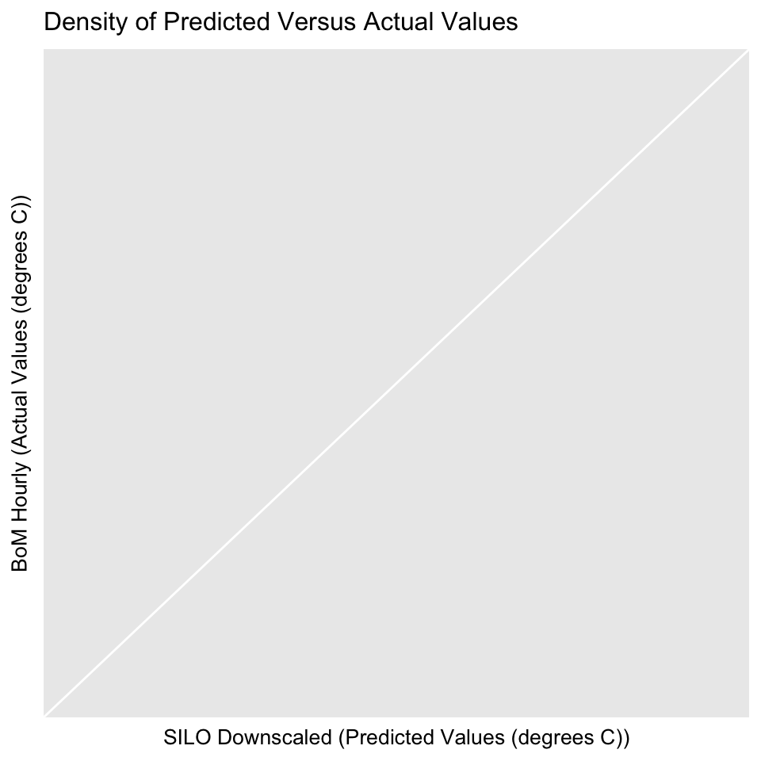

This document illustrates the useage of the JohnConner R package to downscale Queenslan SILO weather data from daily to hourly and send an e-mail alert to subscribers, warning them of heat stress to their crop.
library(JohnConner)
BoM_SILO_data <- downscale()## Warning in utils::data("QLD_SILO_and_hourly_stations", package = "WINS", :
## data set 'QLD_SILO_and_hourly_stations' not found## Warning in utils::data("QLD_hourly_data", package = "WINS", envir =
## environment()): data set 'QLD_hourly_data' not found## Warning in utils::data("QLD_hourly_locations", package = "WINS", envir =
## environment()): data set 'QLD_hourly_locations' not found## Warning in utils::data("SILO_array", package = "WINS", envir =
## environment()): data set 'SILO_array' not found plot_density(BoM_SILO_data)## Warning: Computation failed in `stat_binhex()`:
## Package `hexbin` required for `stat_binhex`.
## Please install and try again.
rmse(BoM_SILO_data[, 3], BoM_SILO_data[, 5])## [1] 3.65625mae(BoM_SILO_data[, 3], BoM_SILO_data[, 5])## [1] 2.571315library(raster)## Loading required package: splibrary(fields)## Loading required package: spam## Loading required package: dotCall64## Loading required package: grid## Spam version 2.1-1 (2017-07-02) is loaded.
## Type 'help( Spam)' or 'demo( spam)' for a short introduction
## and overview of this package.
## Help for individual functions is also obtained by adding the
## suffix '.spam' to the function name, e.g. 'help( chol.spam)'.##
## Attaching package: 'spam'## The following objects are masked from 'package:base':
##
## backsolve, forwardsolve## Loading required package: mapslibrary(reshape)
library(readr)
hourlyT <- BoM_SILO_data[, c(1:2, 4:5)]
head(hourlyT)## station_number JDay Hour SILO_TMP
## 1 27045 1 Hour_01 26.43543
## 2 27045 1 Hour_02 26.11739
## 3 27045 1 Hour_03 25.84448
## 4 27045 1 Hour_04 25.60548
## 5 27045 1 Hour_05 25.39288
## 6 27045 1 Hour_06 25.20143hourlyT$hour <- substr(hourlyT[, 3], 6, 7)
hourlyT <- subset(hourlyT, hourlyT$JDay == 1)[, -3]
hourlyT <- melt(hourlyT, id.vars = c("station_number", "hour", "JDay"), measure.vars = "SILO_TMP")
hourlyT <- cast(hourlyT, hour~station_number, fun = "mean")
head(QLD_SILO_and_hourly_stations)## # A tibble: 6 x 17
## WMO_NUM station_number station_name LATITUDE LONGITUDE STN_HT
## <int> <int> <chr> <dbl> <dbl> <dbl>
## 1 94170 27045 WEIPA AERO -12.6778 141.9208 17.96
## 2 94174 27058 HORN ISLAND -10.5844 142.2900 4.00
## 3 94183 27073 COEN AIRPORT -13.7606 143.1183 159.30
## 4 94276 28004 PALMERVILLE -16.0008 144.0758 203.80
## 5 94186 28008 LOCKHART RIVER AIRPORT -12.7850 143.3047 18.50
## 6 94268 29038 KOWANYAMA AIRPORT -15.4818 141.7483 9.60
## # ... with 11 more variables: AVIATION_ID <chr>, REGION <chr>, `GridPt
## # Lat` <dbl>, `GridPt Lon` <dbl>, `MSAS elevation` <dbl>, `Distance from
## # GridPt` <dbl>, Roughness <dbl>, `Distance from coast` <int>,
## # Category <chr>, forecast_district <chr>, sa_special <chr>header_info <- QLD_SILO_and_hourly_stations[, 2]
temp_threshold <- 30
hours_of_high_temps <- c()
for (x in names(hourlyT[, 2:71])) {
hours_of_high_temps <- c(hours_of_high_temps, length(hourlyT[, x][hourlyT[, x] > temp_threshold]))
}
high_temps <- data.frame(names(hourlyT[, 2:71]), as.numeric(hours_of_high_temps))
names(high_temps) <- c("station_number", "hours_of_high_temps")
df <- plyr::join(high_temps, QLD_SILO_and_hourly_stations, by = "station_number", type = "left")
head(df)## station_number hours_of_high_temps WMO_NUM station_name
## 1 27045 9 94170 WEIPA AERO
## 2 27058 9 94174 HORN ISLAND
## 3 27073 9 94183 COEN AIRPORT
## 4 28004 9 94276 PALMERVILLE
## 5 28008 7 94186 LOCKHART RIVER AIRPORT
## 6 29038 9 94268 KOWANYAMA AIRPORT
## LATITUDE LONGITUDE STN_HT AVIATION_ID REGION GridPt Lat GridPt Lon
## 1 -12.6778 141.9208 17.96 YBWP QLD -12.66 141.92
## 2 -10.5844 142.2900 4.00 YHID QLD -10.57 142.29
## 3 -13.7606 143.1183 159.30 YCOE QLD -13.74 143.13
## 4 -16.0008 144.0758 203.80 YPVI QLD -15.99 144.08
## 5 -12.7850 143.3047 18.50 YLHR QLD -12.78 143.29
## 6 -15.4818 141.7483 9.60 YKOW QLD -15.49 141.75
## MSAS elevation Distance from GridPt Roughness Distance from coast
## 1 13.04 1.3 7.8 10
## 2 7.56 0.2 8.0 6
## 3 159.44 1.4 38.3 50
## 4 215.56 0.8 28.1 143
## 5 20.48 1.6 28.0 10
## 6 4.68 2.0 1.1 28
## Category forecast_district sa_special
## 1 coast QLD_PW001 <NA>
## 2 coast QLD_PW001 <NA>
## 3 flat_inland QLD_PW001 <NA>
## 4 flat_inland QLD_PW001 <NA>
## 5 coast QLD_PW001 <NA>
## 6 flat_inland QLD_PW002 <NA># create the surface to plot
spline <- Tps(data.frame(df$LONGITUDE, df$LATITUDE), df$hours_of_high_temps)
grid <- predictSurface(spline, nx = 2000, ny = 2000)
predict(spline, cbind(151.9507, -27.5598))## [,1]
## [1,] 1.819387Oz <- getData("GADM", country = "AUS", level = 1)
QLD <- Oz[Oz@data$NAME_1 == "Queensland", ]
image.plot(grid, horizontal = TRUE)
plot(QLD, add = TRUE)# send email abut specific locations
our_email <- "toowoombatrio@gmail.com"
attachmentName <- "QLDmap.png"
#subscribers details
library(mailR)
for (value in subscribers$run) {
email <- as.character(subscribers[value,1])
location <- as.character(subscribers[value,2])
lat <- as.numeric(subscribers[value,3])
lon <- as.numeric(subscribers[value,4])
hours_of_heat_stress <- as.character(round(predict(spline, cbind(lat,lon)),0))
body_text <- paste("Hello from the Toowoomba Trio Your crops at",
location, "recieved",
hours_of_heat_stress,
"hours of heat stress yesterday")
sender <- our_email
recipients <- email
send.mail(from = sender,
to = recipients,
subject = "Hours of heat stress yesterday",
body = body_text,
attach.files = attachmentName,
smtp = list(host.name = "smtp.gmail.com", port = 465,
user.name = "toowoombatrio@gmail.com",
passwd = "qwertyytrewq", ssl = TRUE),
authenticate = TRUE,
send = TRUE)
}## Warning: Unknown or uninitialised column: 'run'.